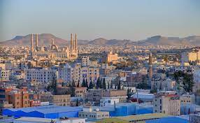

Sanaa
Situated in a mountain valley at an altitude of 2,200 m,
the Old City of Sana'a is defined by an extraordinary
density of rammed earth and burnt brick towers rising
several stories above stone-built ground floors,
strikingly decorated with geometric patterns of
fired bricks and white gypsum. The ochre of the
buildings blends into the bistre-colored earth of the
nearby mountains. Within the city, minarets pierce the
skyline and spacious green bustans (gardens) are
scattered between the densely packed houses, mosques,
bath buildings and caravanserais.